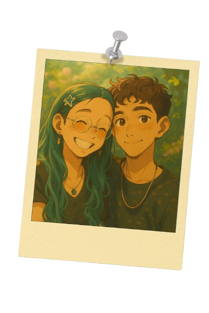

6 meses depois
Uau 6 meses se passaram Sinceramente não esperava que a gente duraria tanto Já brigamos tanto até aqui, Mas sabe a cada vez que brigamos eu só percebo O quanto te amo eu quanto você faz falta na minha vida . Te amo e quero continuar com você Crescendo e evoluindo com você porque sinto que ao seu lado sou uma pessoa melhor.
Meus pensamentos
Sabe, às vezes paro para pensar como seria a nossa vida de casados. Imagino que seria uma vida calma e tranquila. Tipo, em uma tarde de domingo, depois do almoço, a gente lavando a louça juntos e depois se deitando juntinhos nosofá para assistir à Netflix até dormir.
12 meses depois
12 meses e ainda estamos aqui pra mim esse é um marco incrível. Sabe eu lembro de tantos momentos bons que vivemos juntos todas as vezes que saimos pra comer e até mesmo aquela vez que você foi comigo buscar um gabinete no centro, Algumas memorias são momentos mais Marcantes como quando formos No parque de diversão E outros são memorias mais simples, mas sinceramente Eu adoro cada uma delas Simplesmente porque você está nelas.